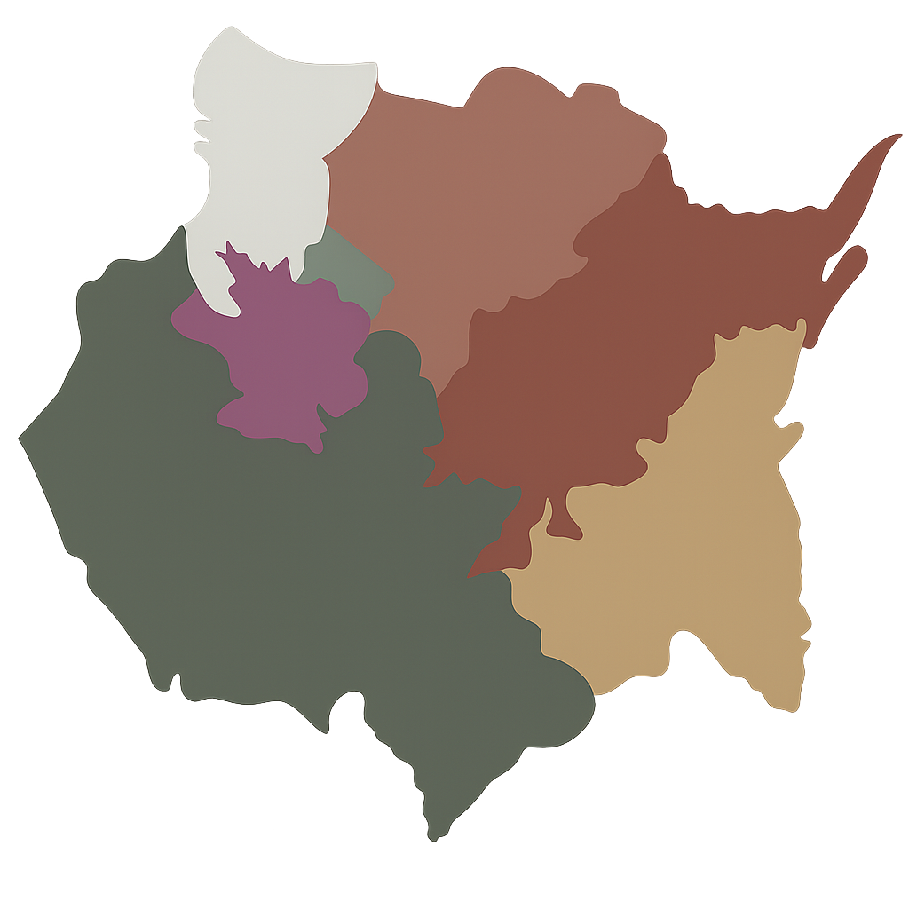

Conecta hospitales y centros de salud de Cuernavaca, Jiutepec y Emiliano Zapata, brindando un servicio
de transporte accesible
Delegaciones CGMT

El estado de Morelos se divide en zonas Centro, Sur y Oriente, cada una con sedes donde puedes realizar
trámites como renovación de licencia, atención ciudadana y gestión de transporte.
MAPA INTERACTIVO
Consulta el mapa interactivo para ubicar rutas de transporte público, paradas cercanas y planear tu
trayecto dentro del estado de Morelos.